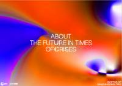

Esta página contiene enlaces a los números publicados de la revista DING en 2021 - 2020 - 2018 - 2017.
Página web: Revista DING
Número 4 - 2021 octubre
Descarga (PDF 24.8 MB, inglés)

Número 3 - 2020 diciembre
Descarga (PDF 8.2 MB, inglés)
Número 2 - 2018 diciembre
Descarga (PDF 15.7 MB, inglés)
Número 1 - 2017 septiembre
Descarga (PDF 9.7 MB, inglés)